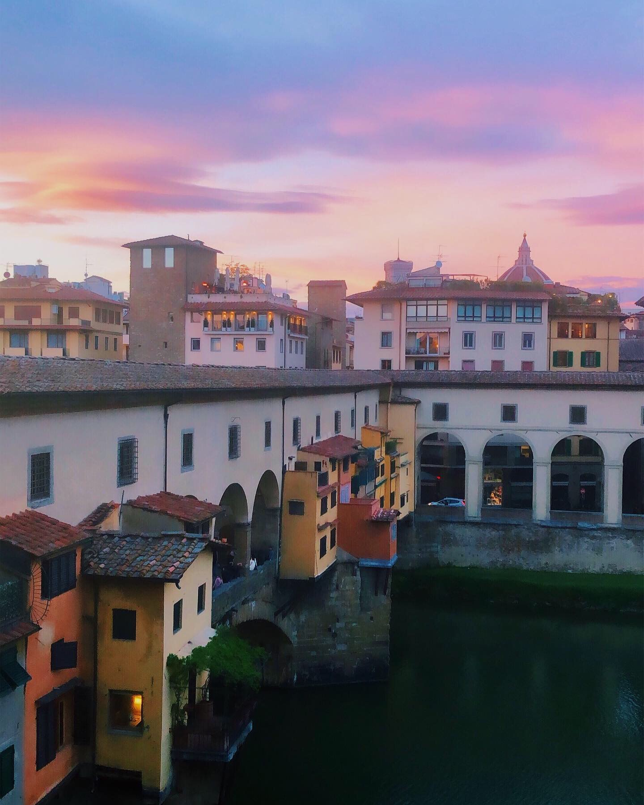
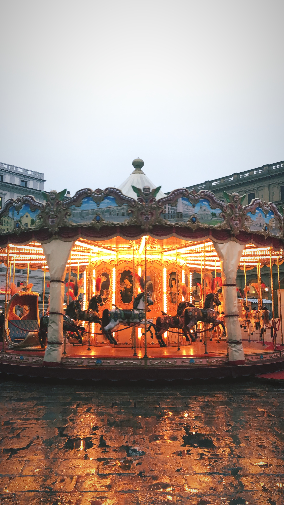
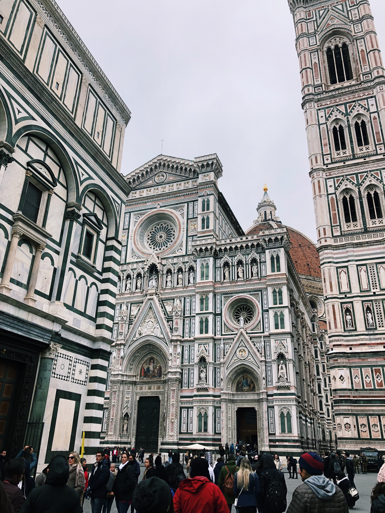
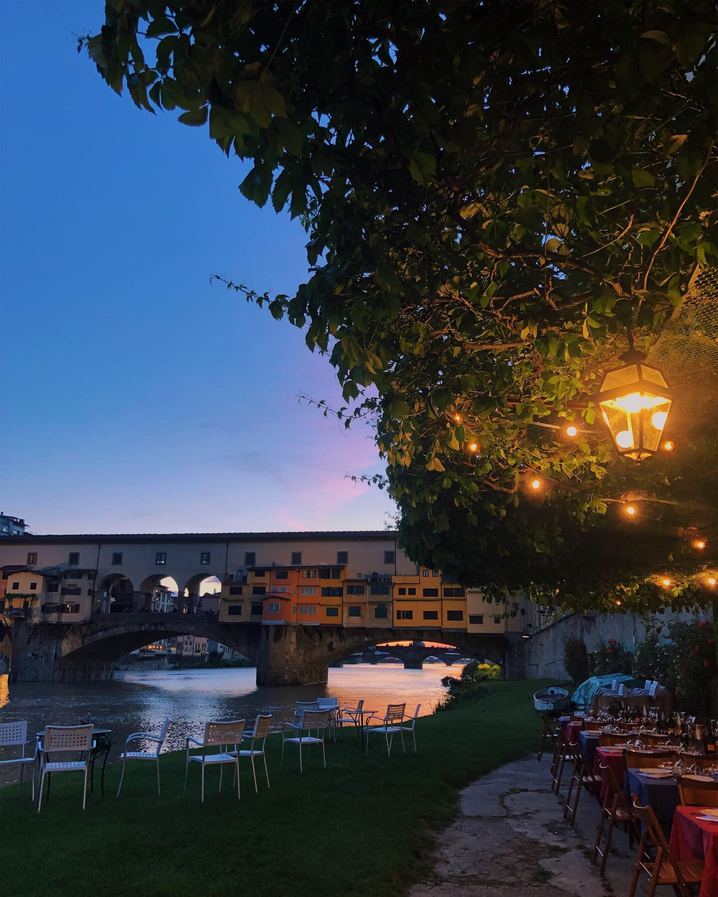
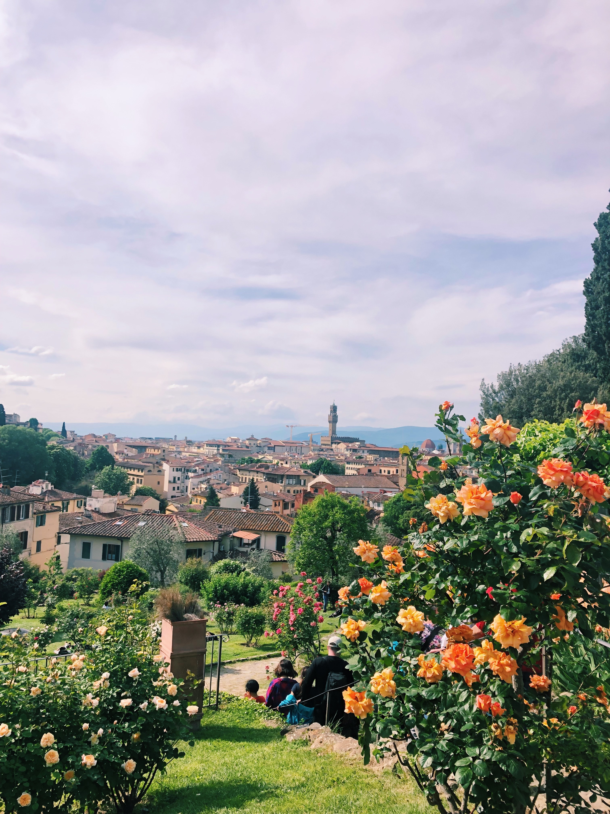
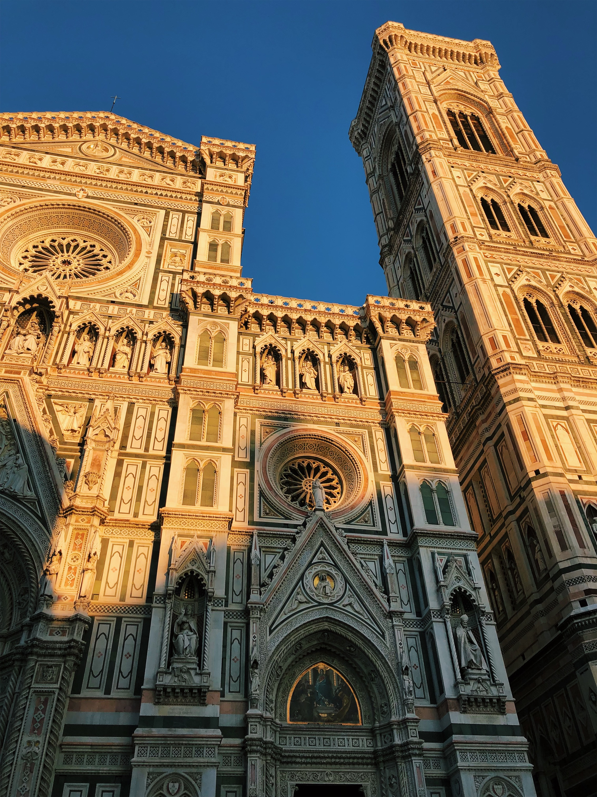
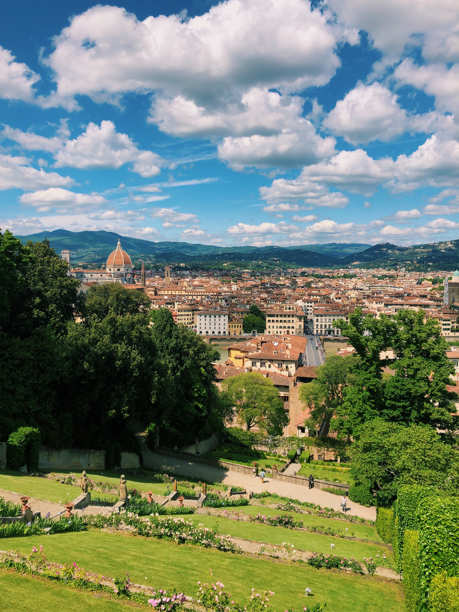
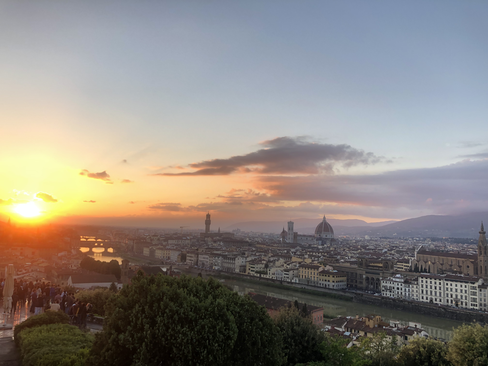

Experience Florence, Italy
Last year, I had the incredible experience of studying abroad in Florence, Italy. I want to share some of the best food, views, and cultural sites that I enjoyed during my adventures abroad. From authentic cuisine to spectacular views, one cannot go wrong with a visit to Florence. Come learn about the city from the immersive perspective of a study abroad experience.








